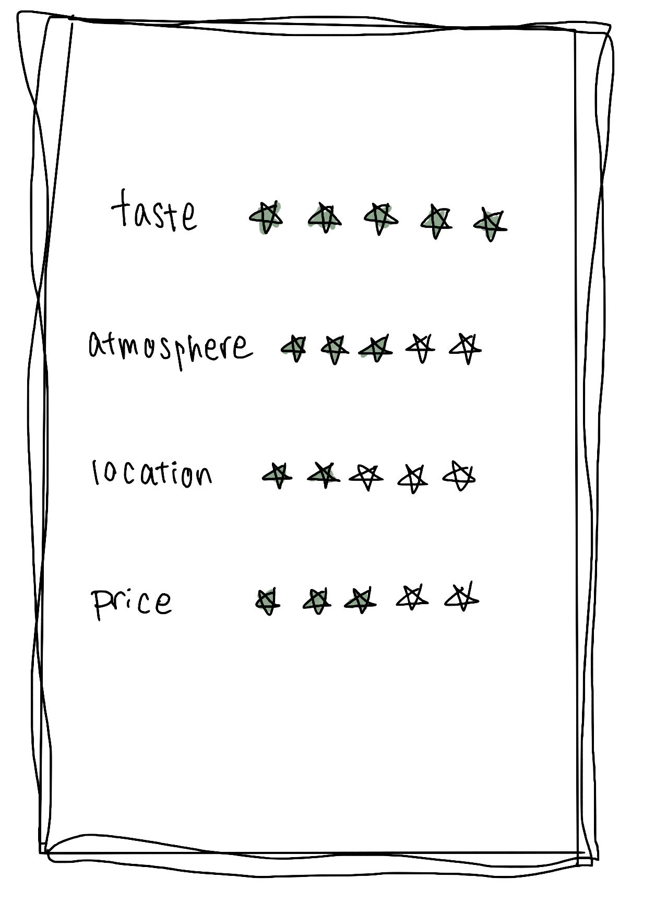

Vert Frais
もちもちとした食感が特徴の日本のパンケーキが、ニューヨークのロングアイランドシティにある素敵なカフェで楽しめます。
ここの日本のパンケーキは、見た目だけでなく、味わいも一級品です。
このカフェは、アットホームで落ち着いた雰囲気で、スタッフはとても親切で歓迎してくれます。
メニューには様々な種類のパンケーキがあり、どれも心地よい甘さとふんわりとした口当たりが楽しめます。
特におすすめは、季節のフルーツとホイップクリームがトッピングされたパンケーキです。
フレッシュなフルーツが添えられ、見た目も美しく、食べるのが楽しみになります。パンケーキ自体はしっとりとしていて、一口食べるたびに幸福感に包まれます。
また、ここでは本格的な抹茶ラテも楽しめます。抹茶の濃厚な風味とまろやかなミルクが絶妙なバランスで調和しています。
場所も便利で、友達や家族との集まりに最適です。ロングアイランドシティで日本の伝統的な味わいを楽しみたい方に、ぜひおすすめのスポットです。
ご飯自体もがっかりで、冷たくて温かさがなく、食事の一部として完璧とは言えませんでした。
価格は手ごろでしたが、味と料理の品質の点で失望しました。
サービスは普通で特に問題はありませんでしたが、食事の質には大いに改善の余地があると感じます。
全体的に、この親子丼は私の期待を満たすには程遠いものでした。


